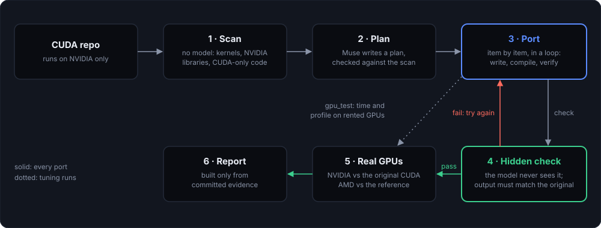

Images
Supplied as 3840 × 2160 JPEGs with this kit. Images 1 and 2 are the project's own title card and speed chart, redrawn at high resolution. All three are graphics, not screen captures.
Muse Port5
Most GPU software is written in CUDA, which runs only on NVIDIA hardware. Muse Port has an AI model plan and port real CUDA projects to SYCL, an open standard, and accepts nothing until a check the model never sees confirms the result.
Muse Port reads a whole CUDA repository and plans its move off NVIDIA: the kernels, the NVIDIA library calls and their open equivalents, and the parts that assume NVIDIA hardware. It then drives an agent that ports the code piece by piece. The model is Meta's Muse Spark (muse-spark-1.3). The ports are run on real NVIDIA GPUs against the original CUDA, and on AMD GPUs against a hidden reference.
The main test case is Andrej Karpathy's llm.c, a GPT-2 trainer written in C and CUDA. The model ported its production trainer (12 CUDA files, 4,884 lines) in one run. The port passes llm.c's own test on a CPU, an NVIDIA GPU and an AMD GPU. A second project, llama2.cu, was ported in one run for $0.45, and its output matches the original byte for byte.
A correct port is not yet a fast one. The first port of the trainer was 36 times slower than CUDA. After the model tuned it on rented GPUs, the portable version runs at 1.40 to 1.55 times CUDA's time on two NVIDIA GPUs, and 2.90 times on an H100.
The work also found a bug in oneMath, the open math library the ports use. A two-line fix was sent upstream as pull request 793. As of {{CHECKED}} it is open, not merged.
Stage: a working research tool, built during the Meta Global AI Developer Hackathon 2026 and submitted to it. The repository was created on 26 October 2026. Every number in this kit comes from evidence committed in the repository, and failures are published there too.

Scan. A plain program, with no model, lists every CUDA file and kernel, the NVIDIA libraries in use, and the code that only works on NVIDIA. This list is the ground truth.
Plan. The model writes a migration plan in a fixed format. Every file and kernel it names must exist in the scan, and every CUDA file must be planned or left out on purpose.
Port. The model works through the plan one item at a time in a loop: write, compile, verify. Each item has a spending cap.
Hidden check. A reference built from the original project's own code and tolerances grades the result. The model never sees it. Each check is first proven on known-good code, before any model runs.
Real GPUs. Passing ports run unchanged on rented NVIDIA and AMD GPUs. For tuning, the model gets a gpu_test tool that builds its code on a GPU and returns timings and a profile. The cloud keys and the budget stay outside the model's process.
Report. A static site is generated only from the committed evidence. No number is typed by hand.
From the repository's README and evidence folder, as of {{CHECKED}}.
| GPT-2 trainer | llm.c's production bf16 trainer, 12 CUDA files and 4,884 lines, ported in one run. It passes llm.c's own test on a CPU, an NVIDIA GPU and an AMD GPU. |
|---|---|
| Speed | In portable SYCL + oneMath: 1.40 to 1.55 times llm.c's CUDA time on an NVIDIA L4 and RTX A4000, 2.90 times on an H100. With NVIDIA's cuBLAS called directly: 1.13 to 1.21 times. |
| Kernels | 19 of llm.c's CUDA kernel files ported. 18 are correct, 17 pass on NVIDIA against llm.c's CUDA, 18 pass on AMD. |
| llm.c-sycl | The ports put back together as a repository laid out like llm.c. Its test prints overall okay: 1 on CPU, NVIDIA and AMD. |
| Second project | llama2.cu (Llama 2 inference, one 772-line CUDA file) ported in one run for $0.45. The generated stories match byte for byte on CPU, NVIDIA and AMD. |
| Upstream | A bug found in oneMath: bf16 gemm on NVIDIA throws "unimplemented". The fix is submitted as uxlfoundation/oneMath#793 (open). |
Honest limits. The one-run port of the trainer succeeded in 1 of 2 tries. Speeds are medians of 2 to 3 runs on rented GPUs whose model varies, so compare the ratios to CUDA on the same machine. The kernel ports are fp32 at reduced sizes. Multi-GPU training and cuDNN attention are not ported. Portable and correct does not yet mean CUDA speed.
Supplied as 3840 × 2160 JPEGs with this kit. Images 1 and 2 are the project's own title card and speed chart, redrawn at high resolution. All three are graphics, not screen captures.
| Install | git clone https://{{REPO_URL}} && cd museport && pip install -e . Python 3.11 or 3.13. |
|---|---|
| Scan | museport scan path/to/cuda/repo needs nothing else: no model, no compiler, no key. |
| Plan and port | A Meta Model API key. museport plan --dry-run works offline. |
| Toolchain | For porting: Intel's icpx compiler, SYCLomatic and the CUDA headers, installed by the toolkit's scripts/install-toolchain.sh. oneMath as well for code that calls cuBLAS. |
| GPU runs | A Runpod, Vast, Vultr or DigitalOcean key. Not needed to try the ported code on a CPU. |
| Try a port | cd llm.c-sycl && ./dev/download_starter_pack.sh && make && ./test_gpt2fp32sycl Ends with overall okay: 1. |
| Builds on | oneapi-agent-toolkit, by the same author (the agent loop and its tools). The code ported is from karpathy/llm.c and ankan-ban/llama2.cu, both MIT. |
| License | AGPL-3.0 |
Demo video (2:20): {{VIDEO_URL}}
Code and evidence: {{REPO_URL}}
Evidence report (PDF, 14 pages): docs/museport-report.pdf in the repository
Contact: {{ARTIST}} · {{CONTACT}} · {{WEBSITE}}
Model: Meta Muse Spark (muse-spark-1.3). Standards and libraries: SYCL 2020, oneAPI, oneMath. Muse Port is an independent project and is not affiliated with Meta, NVIDIA, AMD or Intel.